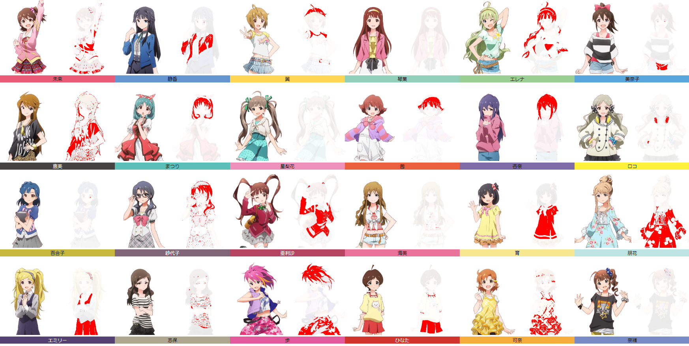
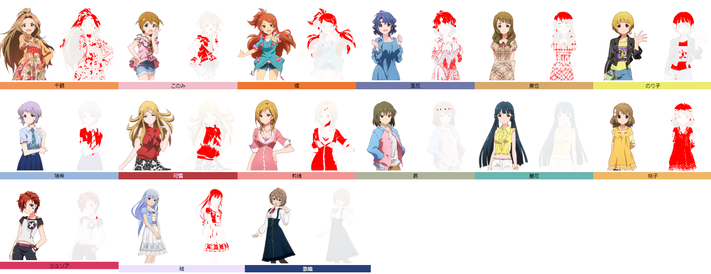
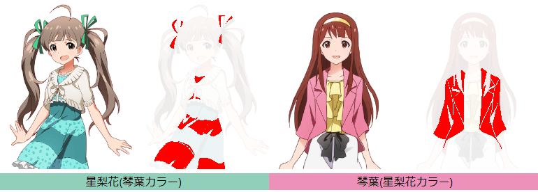

この記事はアイドルマスター Advent Calendar 2020の記事です。
前回の分析では、アイマス各シリーズのイメージカラー分布を分析しました。いまいち傾向はよく分かりませんでしたが。
今回は、ミリオンライブに特化して分析してみます。キャラクターのどの部分の色がイメージカラーに使われているのか調べました。
イメージカラーと100%一致する色だけを抽出するのは条件が厳しすぎるので、多少色が違っていてもOKということにしました。具体的には、CMC
l:cという基準を用い、キャラクターデザインに使われている色とイメージカラーの距離が15未満であれば一致しているということにしました。計算にはchroma.jsライブラリのchroma.deltaE関数を使いました。例えばchroma.deltaE('red', 'blue')と計算すると赤と青がどれくらい離れているのか距離を簡単に算出できます。超便利。
イメージカラーと比較するキャラクター画像はなるべく初期のものがよいと考えられるので、ミリオンライブ(グリマス)の標準立ち絵を使いました。ただし紬と歌織さんはミリシタの立ち絵を使いました。
結果を次の図に示します。立ち絵と、イメージカラーが使われているエリアを赤で塗った絵を並べています。
 
赤く塗られた部分を目視で確認し、キャラクターデザインのどの部分にイメージカラーが使われていたのか表にまとめました。
| 髪 | 服 | 瞳 | その他 | |
|---|---|---|---|---|
| 未来 | 〇 | 髪留め | ||
| 静香 | 〇 | 〇 | ||
| 翼 | 〇 | 〇 | ||
| 琴葉 | ||||
| エレナ | 〇 | 〇 | ||
| 美奈子 | △ | 〇 | ||
| 恵美 | 〇 | |||
| まつり | 〇 | |||
| 星梨花 | ||||
| 茜 | 〇 | |||
| 杏奈 | 〇 | |||
| ロコ | ヘッドホン、バングル | |||
| 百合子 | 〇 | |||
| 紗代子 | 〇 | |||
| 亜利沙 | 〇 | 髪留め | ||
| 海美 | △ | |||
| 育 | 〇 | |||
| 朋花 | 〇 | |||
| エミリー | 〇 | 髪留め | ||
| 志保 | △ | △ | △ | |
| 歩 | 〇 | 〇 | ||
| ひなた | 〇 | |||
| 可奈 | 〇 | 〇 | 〇 | |
| 奈緒 | 髪留め△ | |||
| 千鶴 | 〇 | 〇 | ||
| このみ | 〇 | |||
| 環 | 〇 | 〇 | ||
| 風花 | 〇 | △ | ||
| 美也 | 〇 | 〇 | ||
| のり子 | 〇 | 〇 | アクセサリ | |
| 瑞希 | 〇 | |||
| 可憐 | 〇 | |||
| 莉緒 | 〇 | 〇 | ||
| 昴 | △ | |||
| 麗花 | ？ | |||
| 桃子 | 〇 | 〇 | ||
| ジュリア | △ | |||
| 紬 | 〇 | 〇 | ||
| 歌織 | ？ |
髪由来と服由来が半々くらいという結果になりました。
イメージカラーとキャラクターデザインが一致したグループについては特に言うことはないです。一致度が低かったグループを見てみましょう。
このグループは、パッと見ではイメージカラーと一致しているように見えますが、計算してみるとそうでもありませんでした。
キャラクターデザインの初期案を作成→イメージカラーを決定→キャラクターデザイン最終稿で色バランスを変更、って経緯をたどったりしたのでしょうか？あくまでも想像でしかありませんが。
この二人はキャラクターデザインにイメージカラーが使われている形跡が全くありません。
なんで？
とうか、琴葉のイメージカラーと星梨花のイメージカラーが逆になってませんか？
では琴葉と星梨花のイメージカラーを入れ替えてもう一度計算します。

なんとっ！？互いのイメージカラーにぴったり一致してしまいました。星梨花は琴葉のイメージカラーを身に着け、琴葉は星梨花のイメージカラーを身に着けていたんです！
服を交換したのでしょうか？色を交換したのでしょうか？
かなりエモい。相手の色を纏うんですよ！？ 「色」を交換するんですよ！？ "Tint me, tint you." の関係ってことですよ！？
ちょっとこの事実を知ったとき、この二人の関係が今までと全く違って見えるようになってしまいました。知ってしまった以上もう元には戻れない…
(※私はグリマスをやったことがないので、当時の知識が絶対的に不足しています。もし琴葉と星梨花のイメージカラーに関する情報をどなたかご存知でしたらぜひ教えていただけますようお願いします。m(__)m)
ミリシタで各アイドルのイメージカラーが、キャラクターデザインのどの部分に使われているのかを整理しました。その結果、以下の知見が得られました。